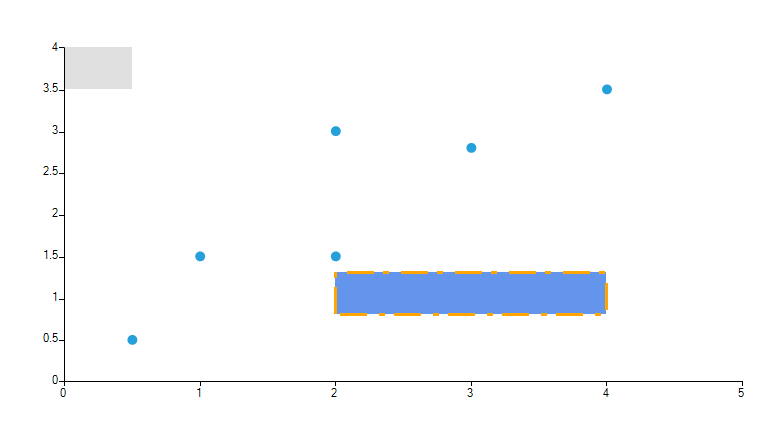
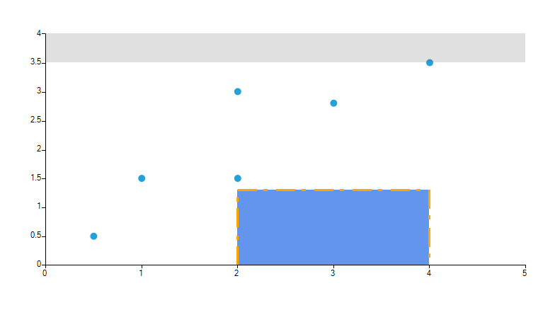

Marked zone
The CartesianMarkedzoneAnnotation is a rectangle defined by the HorizontalFrom/To and VerticalFrom/To properties.

Properties
Besides the HorizontalFrom/To and VerticalFrom/To properties that are used for defining the rectangle, the CartesianMarkedzoneAnnotation exposes the following properties:
HorizontalAxis and VerticalAxis are used for associating the annotation with the chart axes.
BackColor Specifies the fill of the marked zone.
BorderColor Specifies the fill of the marked zone.
BorderWidth Specifies the fill of the marked zone.
Examples
A CartesianMarkedZoneAnnotation is defined like this:
__[C#] __
CartesianMarkedZoneAnnotation annotation1 = new CartesianMarkedZoneAnnotation();
annotation1.HorizontalFrom = 0;
annotation1.HorizontalTo = 0.5;
annotation1.VerticalFrom = 3.5;
annotation1.VerticalTo = 4;
this.radChartView1.Annotations.Add(annotation1);
CartesianMarkedZoneAnnotation annotation2 = new CartesianMarkedZoneAnnotation();
annotation2.HorizontalFrom = 2;
annotation2.HorizontalTo = 4;
annotation2.VerticalFrom = 0.8;
annotation2.VerticalTo = 1.3;
annotation2.BackColor = Color.CornflowerBlue;
annotation2.BorderDashStyle = DashStyle.Custom;
annotation2.BorderDashPattern = new float[] { 9, 3, 2, 4 };
annotation2.BorderColor = Color.Orange;
annotation2.BorderWidth = 3;
this.radChartView1.Annotations.Add(annotation2);
__[VB] __
Dim annotation1 As New CartesianMarkedZoneAnnotation()
annotation1.HorizontalFrom = 0
annotation1.HorizontalTo = 0.5
annotation1.VerticalFrom = 3.5
annotation1.VerticalTo = 4
Me.radChartView1.Annotations.Add(annotation1)
Dim annotation2 As New CartesianMarkedZoneAnnotation()
annotation2.HorizontalFrom = 2
annotation2.HorizontalTo = 4
annotation2.VerticalFrom = 0.8
annotation2.VerticalTo = 1.3
annotation2.BackColor = Color.CornflowerBlue
annotation2.BorderDashStyle = DashStyle.[Custom]
annotation2.BorderDashPattern = New Single() {9, 3, 2, 4}
annotation2.BorderColor = Color.Orange
annotation2.BorderWidth = 3
Me.radChartView1.Annotations.Add(annotation2)
'#End Region
End Sub
Private Sub CartesianMarkedZones2()
Me.radChartView1.AreaType = ChartAreaType.Cartesian
Dim series As New ScatterSeries()
series.DataPoints.Add(New ScatterDataPoint(0.5, 0.5))
series.DataPoints.Add(New ScatterDataPoint(1, 1.5))
series.DataPoints.Add(New ScatterDataPoint(2, 1.5))
series.DataPoints.Add(New ScatterDataPoint(2, 3))
series.DataPoints.Add(New ScatterDataPoint(3, 2.8))
series.DataPoints.Add(New ScatterDataPoint(4, 3.5))
Me.radChartView1.Series.Add(series)
series.BackColor = Color.FromArgb(37, 160, 219)
series.PointSize = New SizeF(10, 10)
'#Region "CartesianMarkedZone2"
Dim annotation1 As New CartesianMarkedZoneAnnotation()
annotation1.HorizontalFrom = 0
'annotation1.HorizontalTo = 0.5;
annotation1.VerticalFrom = 3.5
annotation1.VerticalTo = 4
Me.radChartView1.Annotations.Add(annotation1)
Dim annotation2 As New CartesianMarkedZoneAnnotation()
annotation2.HorizontalFrom = 2
annotation2.HorizontalTo = 4
'annotation2.VerticalFrom = 0.8;
annotation2.VerticalTo = 1.3
annotation2.BackColor = Color.CornflowerBlue
annotation2.BorderDashStyle = DashStyle.[Custom]
annotation2.BorderDashPattern = New Single() {9, 3, 2, 4}
annotation2.BorderColor = Color.Orange
annotation2.BorderWidth = 3
Me.radChartView1.Annotations.Add(annotation2)
'#End Region
End Sub
End Class
By default, the BackColor of the MarkedZone is #33666666 and the BorderColor is not set. You can see this in the first CartesianMarkedZoneAnnotation declaration.
The second declaration shows that you can use the BorderDashPattern property to create an interesting dash pattern.

The flexible design of the MarkedZone annotation allows the user to omit one (or more) of the four Horizontal/VerticalFrom/To properties.
The following table details relationship between the specified properties and the occupied interval on the axis:
| Specified Properties | Occupied interval |
| Both From and To | [Min(From,To), Max(From,To)] |
| Only From | [From,+∞] |
| Only To | [-∞, To] |
Here is the previous example with some of the settings commented
__[C#] __
CartesianMarkedZoneAnnotation annotation1 = new CartesianMarkedZoneAnnotation();
annotation1.HorizontalFrom = 0;
//annotation1.HorizontalTo = 0.5;
annotation1.VerticalFrom = 3.5;
annotation1.VerticalTo = 4;
this.radChartView1.Annotations.Add(annotation1);
CartesianMarkedZoneAnnotation annotation2 = new CartesianMarkedZoneAnnotation();
annotation2.HorizontalFrom = 2;
annotation2.HorizontalTo = 4;
//annotation2.VerticalFrom = 0.8;
annotation2.VerticalTo = 1.3;
annotation2.BackColor = Color.CornflowerBlue;
annotation2.BorderDashStyle = DashStyle.Custom;
annotation2.BorderDashPattern = new float[] { 9, 3, 2, 4 };
annotation2.BorderColor = Color.Orange;
annotation2.BorderWidth = 3;
this.radChartView1.Annotations.Add(annotation2);
__[VB] __
Dim annotation1 As New CartesianMarkedZoneAnnotation()
annotation1.HorizontalFrom = 0
'annotation1.HorizontalTo = 0.5;
annotation1.VerticalFrom = 3.5
annotation1.VerticalTo = 4
Me.radChartView1.Annotations.Add(annotation1)
Dim annotation2 As New CartesianMarkedZoneAnnotation()
annotation2.HorizontalFrom = 2
annotation2.HorizontalTo = 4
'annotation2.VerticalFrom = 0.8;
annotation2.VerticalTo = 1.3
annotation2.BackColor = Color.CornflowerBlue
annotation2.BorderDashStyle = DashStyle.[Custom]
annotation2.BorderDashPattern = New Single() {9, 3, 2, 4}
annotation2.BorderColor = Color.Orange
annotation2.BorderWidth = 3
Me.radChartView1.Annotations.Add(annotation2)
'#End Region
End Sub
End Class
